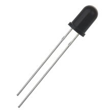

ИК-фотоприёмник F5 940 нм 5 мм, чёрный
Это ИК-фотодиод в корпусе 5 мм (T-1¾) с чёрным корпусом и фильтром, настроенным на приём излучения около 940 нм. Обычно используется как датчик для ИК-приёмников, пультов ДУ и простых систем передачи данных по ИК-каналу.

Документация
Характеристики
Подробнее
По описанию это не передающий ИК-светодиод, а именно фотоприёмник: PIN-фотодиод в выводном корпусе T-1¾ диаметром 5 мм. Для такой детали характерны высокая чувствительность в ИК-диапазоне и подавление видимого света за счёт daylight blocking filter. Типичное применение — приём модулированного ИК-сигнала от 850–950 нм излучателей, например в пультах дистанционного управления и системах free-air data transmission. Чёрный корпус указывает на оптический фильтр и внешне совпадает с распространёнными 5-мм ИК-фотодиодами семейства BPV10/BPV10NF. Если нужна точная электрическая привязка, обычно её уточняют по маркировке на самой детали или по datasheet конкретного семейства.